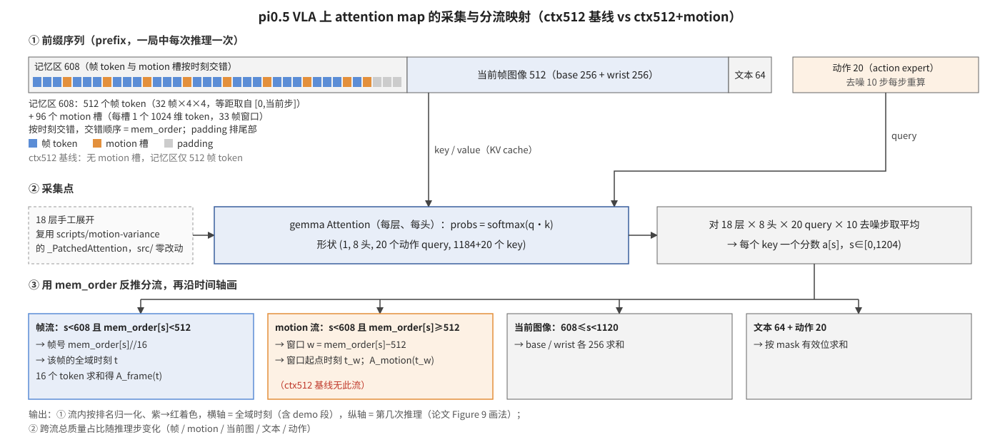
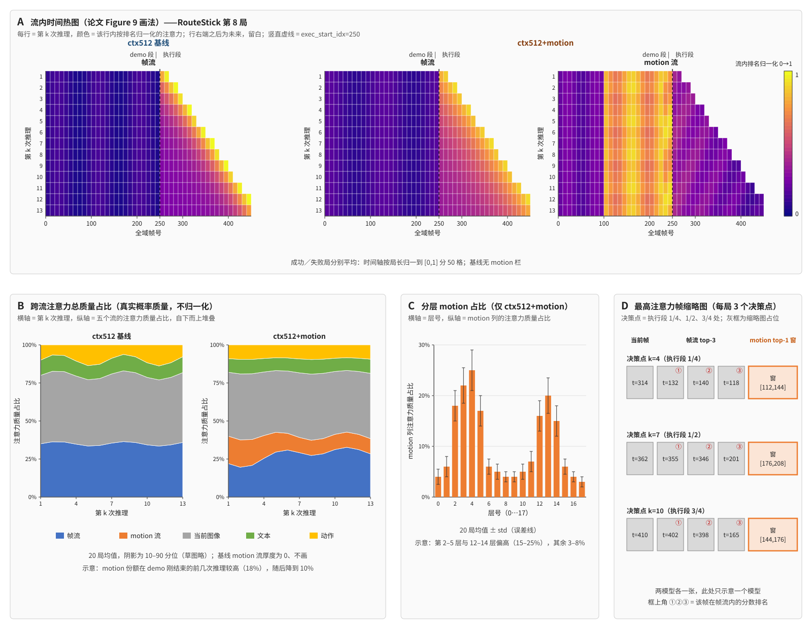

权威性：本文件是「在 pi0.5 VLA 主干上采集并对比 ctx512 基线与 ctx512+motion 模型的 attention map」任务的唯一计划正本；与聊天记录冲突以本文件为准。只规划不实施：每一步须用户对本计划不改而直接认可后才开工（
AGENTS.md第 2 条开工令）。代码锚点：分支
v4.1-interpretMotion（自v4-eval-official-1026的1d10bf26分出），工作副本/data/hongzefu/robomme_policy_learning_MotionJEPA（环境 A）。40 局在本机 2×RTX A6000 上跑（用户 2026-11-03 裁决）；NFS 执行副本$E=/nfs/turbo/coe-chaijy-unreplicated/hongzefu/robomme_policy_learning_MotionJEPA-eval只作为权重与两套解释器（stage2、official-sim）的只读来源。外部锚点：论文 Memory Without Curation: Learning Multi-Stream Latent Memory for Robot Policies（arXiv 2610.14406）Figure 9 与附录 C.4「Attention visualization」；官方权重 HF
Yinpei/mme_vla_suite@5db4d53d的perceptual-framesamp-context/79999.zip（sha256387d4bd5…8ae8，11,574,223,742 B）；我们的 concat 1×1024 权重$E/v1-store/assets/vla-o16cc-59999-bd35a857…/59999（38 文件 11,976,241,540 B，DOWNLOADED.json已核）。commit 体例：功能
commitV<x>.<y>:，文档docs:，子代理sub/<编号>:，合并--no-ff。本计划日期前缀1103（美东 2026-11-03）。
scripts/motion-variance），不改 src/。mem_order 把这个向量拆成五份：历史帧、motion 槽、当前图像、文本、动作。基线没有 motion 那份。| 存 | 张量 | 形状（f16） | 单次推理 | 说明 |
|---|---|---|---|---|
| ✅ | probs_action | (10 去噪步, 18 层, 8 头, 20 动作 query, P+20 key) | 约 70 MB | 主数据，任何聚合、任何画法都从它算 |
| ✅ | probs_text | (18 层, 8 头, 64 文本 query, P key) | 约 22 MB | 文本 token 看历史的那 64 行（用户「文本也要」）；它来自 prefill 阶段，只取这 64 行 |
| ❌ | prefill 阶段 prefix 自身的全量 attention（记忆区、当前图像互看） | (18, 8, P, P) | 约 200 MB | 不存（用户 2026-11-03） |
| ✅ | 元数据 | — | < 1 MB | mem_order、记忆区 mask、32 个帧号、96 个 motion 窗口起点、step_idx、exec_start_idx、文本有效长度、本次动作 (20,8)、top-3 帧号 |
P = prefix 长度：基线 1088，motion 模型 1184。第一阶段 2 局约 5 GB，第二阶段 40 局约 90 GB，都落本机 v1-store/evaluation/interpret-1103/，不进 git。
perceptual-framesamp-context/79999 vs orig100-ctx32x4x4-motion-s2concat1x1024-b128-60k/59999。

第一部分到此为止；机制细节、模型与局清单、判定行、步骤、分工、逐文件改动、runbook、风险与盲区全部在第二部分。
src/、examples/、third_party/、scripts/training/ 零 diff（闸：git diff --quiet <BASE>..HEAD -- src examples third_party scripts/training）。probs；禁止改 input_mask／positions／mask 任何一层；禁止在 src/mme_vla_suite/policies/ 下出现 MotionStore（既有静态闸 check_config_provenance.py）。eval.py 的 profile=official 校验（test、1300 步、16 帧包、seed 42）原样；manifest 走 make_manifest 签封。v1-store/evaluation/interpret-1103/（K10），不进 git、不上传；np.savez 不压缩（概率张量压不动，省 CPU）。NFS 一律只读（rsync 源、两套解释器）；本机只写 v1-store/models/official-mme-vla/、v1-store/assets/、v1-store/evaluation/interpret-1103/、v1-store/logs/、.venv/。ia-；清理只用 tmux kill-session -t '=确切名'，删前删后各 tmux ls。XLA_FLAGS='--xla_gpu_deterministic_ops=true --xla_gpu_autotune_level=0'，所有 python 入口硬闸。| # | 口径 | 依据 |
|---|---|---|
| K1 | 看的是 VLA 主干自身的 attention，不是 memory encoder：「我要的不是对于 encoder 做 cross attention，我要的是在 VLA 上……因为我们是通过 context 的方式来注入的……要看这个在对 VLA 上的 attention map」 | §二 |
| K2 | 对比对象：「官方 ctx512/79999 vs concat1×1024/59999」（选择题答复） | §三 |
| K3 | 取数方式：「在线仿真重跑」（选择题答复，推荐的离线回放被否） | §四 |
| K4 | query 与聚合：「动作 token，全层全头平均」（选择题答复） | §二 |
| K5 | 任务：「先设计两个 task，一个是 button and mask swap，一个是 route stick」→ ButtonUnmaskSwap、RouteStick（仓库里不存在 RouteSticker／RotateStick 变体） | §三 |
| K6 | 环境：本机 GPU 实测 2×RTX A6000 与判据表不符，用户答复「按环境 A 继续（仅判据表写错）」 | §〇 红线 0 |
| K7（agent 默认，待用户确认） | 每任务每模型 10 局，seed 42；20 局按 concat 模型 seed 42 官方 800 局的结局成功 5 + 失败 5 取 episode_id 最小者，两模型跑同一批 episode_id | §三 |
| K8 | 运行位置本机（用户原话「在本地运行」）。本机现状：策略 .venv 为空壳（site-packages 仅 3 项，需 uv sync）；无 sidecar／仿真 venv，但 NFS 的 $E/v1-store/envs/stage2/bin/python（torch 2.9.0+cu128，cuda.is_available()=True）与 $E/v1-store/envs/official-sim/bin/python（robomme 可导入，editable 指向 release 420ae98 的 third_party/robomme_benchmark/src，其 gitlink 856bc3a 与本分支一致）在本机实测可直接用；权重两份都要落到本机 v1-store/（官方 79999 自 HF 下载 11.6 GB，concat 59999 自 NFS rsync 13 GB，stage2 encoder 自 NFS 拷 1 份）；Vulkan 1.4.303 可见 A6000 | §五 |
| K9 | 不登记状态机（用户原话「不登记」）；交接走人工 | §八 |
| K11 | 分两阶段；第一阶段只跑「两模型都成功」的各 1 局。用户原话「先只测一句成功的 routestick和buttonunmaskswap都是 两个model都成功的」。官方 ctx512 在 16 任务上没有评估记录，哪局成功未知，故第一阶段按 concat 模型 seed 42 的成功局 episode_id 升序逐局试基线（RouteStick 1→8→9→10→13，ButtonUnmaskSwap 4→8→11→12→17），基线成功即停，再用 concat 模型跑同一局确认也成功；每次尝试的 attention 都落盘不丢。第二阶段 20 局（K7）另等开工令 | §三、§六 |
| K10 | 原始 attention 全存、后期再画：用户原话「是否可以先记录所有的attn？ 记录所有源数据 后期我再画图不同形式？」「同意 修改 f16就可以 文本也要」，2026-11-03 最终确认「好的就保留这些」（去噪 action 全存 + prefill 文本 64 行）。每次推理落盘平均前的完整张量：动作 query 的 (10 去噪步, 18 层, 8 头, 20 query, P+20 key) 与 prefill 阶段文本 query 的 (18, 8, 64, P)，均 f16；画图脚本只读盘 | §2.3、第二部分 §1.3 |
prefix = [记忆区 | 当前帧图像 512 | 文本 64]，其后是动作专家的 20 个动作 token。记忆区在基线里是 512 个帧 token（32 帧 × 4×4，等距取自 [0, 当前步]）；在 concat 模型里是 512 帧 token + 96 motion 槽共 608 位，两路按时刻稳定排序交错，置换存在 obs.mem_order（HistoryPi0.embed_memory 里 jnp.take_along_axis(tokens, obs.mem_order[:, :, None], axis=1)），padding 排尾部、mask 为 False、不占位置号。可见关系（make_attn_mask 的 ar／na／input 三层 mask）：记忆区双向；当前图像看不到记忆区；文本看记忆区；动作看全部。因此 query 取动作 token 时，key 覆盖整条 prefix（含 motion 槽）+ 20 个动作 token，正是 K1／K4 要的那张图。
gemma.Attention 的 probssrc/openpi/models/gemma.py::Attention.__call__ 里 logits = einsum("BTKGH,BSKH->BKGTS") → masked_logits = where(attn_mask, logits, big_neg) → probs = softmax(masked_logits).astype(dtype)，probs 只是局部变量，模型没有任何 output_attentions 开关；主干 18 层是 nn.scan 扫出来的，在 scan 体里追加到 Python 列表会泄漏 tracer。仓库已有解法：scripts/motion-variance/mv_model_adapter.py 的 _make_patched_attention() 把 Attention.__call__ 全文照抄、只把 softmax 拆成 f32 概率 + astype 两句并追加到 _CAPTURE，配合 _build_unrolled() 把 18 层按 block.apply({"params": p_l}, …) 手工展开，每层调一次 _capture_attn 拿到该层 probs（形状 (b, 1 kv头, 8 头, T, S)）。这套东西已经过 UNROLL_VS_SCAN_F32／LAYER_SELFCHECK_F32／ATTN_UNIFORM_SELFCHECK 三道闸，本计划原样复用其机制，src/ 零改动。
去噪 10 步（sample_actions 的 while_loop，dt=-1/10）每步动作 token 都重新过 18 层，所以每次推理得到的原始量是 probs[step][layer]，形状 (1, 1, 8, 20, P+20)，P = prefix 长度（基线 512+512+64=1088，concat 608+512+64=1184）。
a[s] = mean_{step∈10} mean_{layer∈18} mean_{head∈8} mean_{query∈20 动作 token} probs[step][layer][0,0,head,query,s] # s ∈ [0, P+20)
a_layer[l, s] = 同上但不对 layer 平均 # (18, P+20)，供分层观察
分流靠数据侧的四个量反推（都在 MME_VLA_Policy._prepare_history 已算出：static_mask、motion_mask、mem_order，帧号来自 get_frame_sampling_indices、窗口起点来自 _prepare_motion 的 motion_times）：
| 流 | s 的范围与反推 | 时间轴坐标 | 基线 |
|---|---|---|---|
| 帧流 | s < MEM 且 mem_order[s] < 512：帧号 f = mem_order[s] // 16，16 个 token 求和为 A_frame(f) | 该帧的全域帧号 frame_times[f]（含 demo 段） | 有（MEM=512，无 mem_order 时恒等映射） |
| motion 流 | s < MEM 且 mem_order[s] ≥ 512：窗口 w = mem_order[s] − 512，A_motion(w) | 窗口起点 motion_times[w]（33 帧窗，demo／exec 各自成网格） | 无 |
| 当前图像 | MEM ≤ s < MEM+512：base 256 + wrist 256 | 当前步 | 有 |
| 文本 | MEM+512 ≤ s < P，按 tokenized_prompt_mask 有效位 | — | 有 |
| 动作 | P ≤ s < P+20 | — | 有 |
padding 位（mask False）的 a[s] 被 softmax 的 big_neg 压为 0，不参与任何归一化。
K10：平均是画图时做的，不是落盘时做的。服务端存的是平均前的原始张量 probs_action（10 步 × 18 层 × 8 头 × 20 query × (P+20)，f16，约 70 MB／次推理）与 probs_text（prefill 阶段 64 个文本 token 作 query 的 18 × 8 × 64 × P，f16，约 22 MB／次），上面的 a、a_layer 都由 aggregate_attn.py 从盘上算；以后换 query（文本 token）、换聚合（某几层、某几头、最后一步去噪）都不用重跑。40 局约 1000 次推理，合计约 90 GB，落 v1-store/evaluation/interpret-1103/，不进 git。
| 图 | 横轴 / 纵轴 | 值 | 回答什么 |
|---|---|---|---|
| A 流内时间热图（论文法） | 横轴 = 全域帧号 0…T（demo 段用竖线标 exec_start_idx）；纵轴 = 第几次推理（每 16 步一次） | 每行内按流分别把 A_frame(t)／A_motion(t_w) 排名归一化，紫→红；左右两栏分别是帧流与 motion 流，基线只有帧流 | 模型在每个决策点回看的是哪段历史；motion 流是否盯着 swap 时刻（ButtonUnmaskSwap）或 demo 的路径段（RouteStick） |
| B 跨流质量占比 | 横轴 = 第几次推理；堆叠面积 | 五流各自 Σ a[s]（未归一化的真实概率质量） | 多出来的 96 个 motion 槽到底分走多少注意力；基线的质量落在记忆区还是当前图像 |
| C 分层 motion 占比 | 横轴 = 层 0…17 | Σ_{s∈motion} a_layer[l,s]，20 局均值 ± std | motion 在哪几层被读（仅 concat 模型） |
| D 最高注意力帧缩略图（论文图 9 右侧那种） | 每局 3 个决策点（exec 1/4、1/2、3/4 处） | 帧流前 3 名的原始帧 + motion 流前 1 名窗口的首尾帧 | 给人看「它在看什么」 |
每张图都按「任务 × 模型 × 成功/失败」分面：A 图逐局一张（40 张）+ 成功/失败各一张平均；B、C 图平均并画 20 局的带。
input_mask、不能动 positions：采集只读 probs，不插任何门控；positions = cumsum(input_mask) − 1 原样。nn.scan 不逐位：bf16 下是两份 XLA 编译产物，motion-variance 实测 rel_fro≈3e-3；语义等价只能靠 f32 闸判定。本计划执行局里真正下发给仿真的动作就是展开版算出来的，所以热图和动作同源；展开版与生产版的差异另用 ATTN_SELFTEST 闸量化（§四），并把 40 局的成功数与 10-31 同 episode 的官方结局并列报告，不宣称可替代官方成功率。docs/motion-utilization.md 的 mask／swap 实验覆盖，不重做。gl-orig100-ctx-reproduce-train（自训 ctx512 无 motion）交付后可用同一套脚本补一组同口径对照，不在本计划范围。demo_frames=0），前两次推理 motion 流全是 padding，A 图对应行留白而非画 0。| 项 | 官方 ctx512（R-CTX） | ctx512+motion concat（R-MOT） |
|---|---|---|
| checkpoint | HF Yinpei/mme_vla_suite@5db4d53d perceptual-framesamp-context/79999.zip → 解压到本机 v1-store/models/official-mme-vla/perceptual-framesamp-context/79999（下载脚本抄 docs/training-doc/eval-3seed-context-vs-motion/download_official.sh） | 本机 v1-store/assets/vla-o16cc-59999/59999（自 $E/v1-store/assets/vla-o16cc-59999-bd35a857…/ rsync，连同 history_config.*、manifests/、encoder_dependencies*） |
| 加载分支 | history_config.txt 旧兼容路径（非严格恢复），无 sidecar | history_config.resolved.yaml 严格恢复，自动拉起 stage2 sidecar（encoder 自 $E/v1-store/assets/stage2-epoch105-27daa832/ rsync 到本机 v1-store/assets/stage2-epoch105-27daa832/；sidecar 解释器 --stage2-python $E/v1-store/envs/stage2/bin/python） |
| policy_config | mme_vla_suite_b128（motion-variance 对官方权重用的名字；CFG_RESOLVE 闸核实与 mme_vla_suite_orig16_b128_60k 的差异只在训练侧数据键，不影响推理归一化——归一化统计来自 checkpoint assets/） | mme_vla_suite_orig16_b128_60k（10-31 spec 原值） |
| prefix 长度 P | 1088 | 1184 |
| 已知成功率（参考） | 4 任务 200 局 24.5%（三 seed）；16 任务无记录 | 16 任务 800 局 37.33 ± 0.59%；seed 42 下 ButtonUnmaskSwap 12/50、RouteStick 16/50 |
第一阶段（K11）：目标 2 局——RouteStick 与 ButtonUnmaskSwap 各 1 局，两模型都成功。候选序列见 K11，每试一局两模型各跑一次（基线先跑），最多试 5 局；5 局都不成就把逐局结局交用户定。判定行 STAGE1_PAIR=PASS task=<t> ep=<id> ctx=success motion=success tries=<n>。
第二阶段 20 局清单（K7，另等开工令），取自 $E/v1-store/evaluation/official-stage2-1026/o16cc-60k-seed42/run800/accepted/ 的 outcome，episode_id 升序各取 5：
| 任务 | concat 成功局 | concat 失败局 | 局长参考 |
|---|---|---|---|
| ButtonUnmaskSwap（无 demo） | 4, 8, 11, 12, 17 | 0, 1, 2, 3, 5 | exec 296～574 步 → 每局 19～36 次推理 |
| RouteStick（有 demo 视频） | 1, 8, 9, 10, 13 | 0, 2, 3, 4, 5 | demo 100～350 帧（首包一次性进记忆），exec 44～318 步 → 每局 3～20 次推理 |
语言目标（task_goal.py）：ButtonUnmaskSwap「first press both buttons on the table, then pick up the container hiding the {c0} cube, finally pick up another container hiding the {c1} cube」；RouteStick「watch the video carefully, then use the stick attached to the robot to navigate around the sticks on the table, following the same path」。
现有评估链路（official_queue.py → resident_worker.py → serve_policy.py + eval.py）完全不吐 attention，而 K3 要求走真实在线协议，所以必须换一个会落盘 attention 的服务端；又因 resident_worker.py 把 worker 绑死在 Slurm step 内（worker必须在指定JobID的GPU srun step内执行），本机（K8）需要一个不经队列、直接「起服务端 → 跑一个 5 局 chunk 的 eval.py → 收尾」的本地驱动。客户端 eval.py、manifest 签封、身份校验、视频一律不动。
| 文件 | 锚点 | 改什么 | 关闭态 | 开启态 |
|---|---|---|---|---|
scripts/interpret/attn_adapter.py（新） | AttnAdapter.f_sample_attn | 复刻 sample_actions（context 分支）的 18 层手工展开版：prefill 每层 block_apply 存 K/V，去噪 10 步每层捕获 probs，累加 a_layer (18, P+20)；返回 x_0 与 a_layer。依赖 mv_model_adapter._make_patched_attention / _capture_attn / _guard_model_source（import 复用，不复制） | 不存在 | 只被下面的服务端 import |
scripts/interpret/serve_policy_attn.py（新） | main | 照 scripts/motion-variance/serve_policy_mv.py 骨架：起同一个 MME_VLA_Policy，在实例属性上把 policy._sample_actions 换成 f_sample_attn 包装；每次 infer 把原始 probs_action／probs_text（f16，K10）、mem_order、static_mask、motion_mask、帧号、motion_times、step_idx、exec_start_idx、prompt 有效长度写一份 npz 到 --attn-out/<episode_nonce>/infer_<seq>.npz；D 图所需原始帧按 top-3 另存 jpg。命令行与 serve_policy.py 兼容（--port/--seed/--motion-online-gpu/--stage2-python/--run-identity-sha256/--server-nonce/--eval-purpose policy:checkpoint …）再加 --attn-out | 不存在 | 由 run_local.py 启动 |
scripts/interpret/run_local.py（新） | main | 本地驱动：读 spec（policy_python/sim_python/stage2_python/checkpoint/policy_config/model_kind/run_identity_sha256/cuda/attn_out）与 manifest；逐 chunk：生成 nonce → 起 serve_policy_attn（命令形状照抄 resident_worker.server_command，只换模块名并加 --attn-out）→ 探 /healthz 就绪（同时 kill -0 服务端进程）→ 以 resident_worker.client_command 同形命令起 eval.py（grant 由 manifest.py 的签封清单切块）→ 等客户端退出 → 终止服务端 → 下一 chunk。环境变量照 worker_environment（PYTHONPATH=repo:repo/src:packages/openpi-client/src:third_party/robomme_benchmark/src）。trap 收尾服务端，端口起跑前探占用 | 不存在 | 每模型一条 tmux |
scripts/interpret/build_manifest.py（新） | main | 用 scripts/evaluation/manifest.py::make_manifest 生成 20 局清单（4 块 × 5 局，按任务分块），episode 的 env_seed/difficulty 从官方元数据读 | — | — |
scripts/interpret/aggregate_attn.py（新） | main | 读 npz，先把 probs_action 按 K4 平均成 a／a_layer（聚合轴可由命令行改：--steps last|all、--layers、--heads、--query action|text），再按 §2.3 分流，输出每局 streams.json 与跨局汇总 summary.json，末行 ATTN_AGG=… | — | — |
scripts/interpret/plot_attn.py（新） | main | matplotlib 画 A/B/C/D 四类图（PNG，热图 interpolation="nearest"），末行 ATTN_PLOT=… | — | — |
src/、examples/、third_party/、scripts/training/、scripts/evaluation/ 全部零改动。
| 判定行 | 查什么 / 怎么查 | 过了说明什么 |
|---|---|---|
OFFICIAL_CTX_ASSET=PASS sha256=387d4bd5… bytes=11574223742 files=<n> | 下载 zip 三方核 sha256（HF LFS、钉死值、本地），解压后文件数与 history_config.txt 存在 | 基线权重身份钉死（第 15 条） |
LOCAL_ASSETS=PASS cc59999_files=38 cc59999_bytes=11976241540 encoder_sha256=27daa832… | rsync 后按 DOWNLOADED.json／source-manifest.json 核文件数、字节数与 encoder sha256 | motion 侧权重与 encoder 同源 |
LOCAL_ENVS=PASS policy=<.venv> jax=0.5.3 torch=2.7.1 stage2_torch=2.9.0 sim_robomme=<path> | 三个解释器各 import 一次并打印来源路径：本机 .venv 的 mme_vla_suite.__file__ 必须在本仓库 src/；NFS official-sim 的 robomme.__file__ 指向 release 420ae98、gitlink 与本分支 856bc3a 相同 | 环境指向正确（第 24 条 editable 校验） |
CFG_RESOLVE=PASS official=mme_vla_suite_b128 motion=mme_vla_suite_orig16_b128_60k | 两份 create_trained_policy 构造成功，打印 P（1088／1184）、motion_enabled（False／True） | 两条加载路径都通 |
ATTN_SELFTEST=PASS f32_maxabs≤1e-5 bf16_relfro=<v> rowsum_err≤1e-4 uniform_ok=1 | 同一观测同一噪声：① f32 下展开版 vs 生产 _sample_actions 动作最大绝对差；② bf16 下 Frobenius 相对差（观察项）；③ 每行 probs 求和 = 1；④ 把 q 置零应得合法 key 上的均匀分布（抄 ATTN_UNIFORM_SELFCHECK） | 采集到的概率就是模型真实用的概率，不是旁路近似；为什么能逐位：f32 下两份编译产物的算子序相同 |
ATTN_SMOKE=PASS task=ButtonUnmaskSwap ep=4 infers=<n> npz=<n> | 本机各模型先跑 1 局，npz 数 = infer 数，每份含全部键且 probs_action.shape==(10,18,8,20,P+20)、probs_text.shape==(18,8,64,P)、每个 (step,layer,head,query) 行求和 = 1±2e-3（f16） | 第 4 条最小 smoke |
RUN20=PASS model=<ctx|motion> episodes=20 success=<k> npz=<n> | 每模型 20 局全部 record_type=terminal；成功数与 10-31 同 episode 的官方结局并列（motion 侧 10-31 为 10/20） | 40 局跑完、数据齐 |
ATTN_AGG=PASS episodes=40 pad_mass≤1e-6 stream_sum_err≤1e-4 | padding 位质量为 0；五流质量之和 = 1 | 分流映射没算错 |
ATTN_PLOT=PASS figs=<n> + 主会话目视复查 | A/B/C/D 图生成；按第 2 条画图规则渲染后亲眼看坐标轴、图例、留白 | 可交付 |
| 阶段 | 内容 | 判据 |
|---|---|---|
| P0 | 开工前审查子代理审本计划自相矛盾处 | PLAN_CONSISTENCY_REVIEW=PASS base=<sha> |
| P1 | 资产与环境（与 P2 并行，均 tmux）：下载官方 79999（ia-dl-ctx79999）；rsync concat 59999 与 stage2 encoder（ia-rsync-assets）；UV_CACHE_DIR=v1-store/cache/uv UV_LINK_MODE=copy uv sync 重建本机 .venv（ia-uv-sync） | OFFICIAL_CTX_ASSET、LOCAL_ASSETS、LOCAL_ENVS 均 PASS |
| P2 | S1／S2／S3 三个 worktree 子代理并行写代码；S1 自检在 P1 完成后由主会话在 GPU0 跑（≤5 min） | ATTN_SELFTEST=PASS、CFG_RESOLVE=PASS、各 sub/ 提交 |
| P3 | 合并前审查 → --no-ff 合并 → 合并后审查 → push；打 commitV…Beta 锚点，git status --short 为空 | PRE_MERGE_REVIEW=PASS、POST_MERGE_REVIEW=PASS、SRC_ZERO_DIFF |
| P4 | 第一阶段（K11）：按候选序列逐局找「两模型都成功」的 RouteStick、ButtonUnmaskSwap 各 1 局；拿到即出这 2 局的 A/B/C/D 图交用户 | ATTN_SMOKE=PASS、STAGE1_PAIR=PASS ×2 |
| P5（第二阶段，另等开工令） | R-CTX（GPU0）、R-MOT（GPU1）各 20 局并行，各一条 tmux、各挂一个 Monitor | RUN20=PASS ×2 |
| P6 | 汇总、出图、目视复查、写档案 docs/evaluation-doc/attn-ctx512-vs-motion-1103/{launch,result}.md、核对 tmux ls 本轮会话全部退出 | ATTN_AGG、ATTN_PLOT |
拆三块、写集不相交：S1 写采集适配器与自检（最难、最先合）；S2 写服务端、manifest 与 worker 的两键钩子；S3 写汇总与画图（只依赖 npz 键名契约，见第二部分 §1.3）。顺序 S1 → S2 → S3 逐个 --no-ff 合回 v4.1-interpretMotion；每次合并前由 sonnet 审查子代理钉 BASE/TIP 审「越界、契约、前缀」，合并后主会话跑 S1 自检 + S2/S3 的单测。下载、rsync、uv sync、tmux、Monitor、40 局起跑全部主会话自做。
interpret-attn-ctx512-vs-motion。OFFICIAL_CTX_ASSET、LOCAL_ASSETS、LOCAL_ENVS、ATTN_SELFTEST、两份 STAGE1_PAIR、ATTN_AGG、ATTN_PLOT；第二阶段另加两份 RUN20。gl-orig100-ctx-reproduce-train 交付后可用同一脚本补「同口径 ctx512 无 motion」一组，届时另起计划。docs/handoff/current.json；交接走人工，本节只作留档。scripts/interpret/attn_adapter.py（S1）from mv_model_adapter import _make_patched_attention, _capture_attn, _guard_model_source（通过 sys.path.insert 指到 scripts/motion-variance）；_guard_model_source() 在构造时调用，源码漂移即 SystemExit。class AttnAdapter(policy)：nnx.split(policy._model)；cfgs = (get_config(paligemma_variant), get_config(action_expert_variant))；P 从 embed_prefix 一次 dry run 取得（1088／1184，不写死）；L=18、AH=20。f_sample_attn(state, rng, obs, noise, num_steps)（jax.jit，static_argnames=("num_steps",)）：
o = preprocess_observation(None, obs, train=False)
pt, pm, par, pna = m.embed_prefix(o); base = make_attn_mask(pm, par, pna); pos = cumsum(pm)-1
h = pt.astype(ed); K=[]; V=[]
for l in range(L): (h,_),(k,v),_ = block_apply(layers,l,[h,None],None,pos,base,[None,None]); K.append(k); V.append(v)
def step(carry): x_t, time, acc = carry
st, sm, sar, _, ad = m.embed_suffix(o, x_t, time); sattn = make_attn_mask(sm, sar)
full = concat([repeat(pm,"b p -> b s p",s=AH), sattn], -1); spos = sum(pm)[:,None] + cumsum(sm) - 1
hs = st.astype(ed); rows=[]
for l in range(L): (_,hs),_,probs = block_apply(layers,l,[None,hs],(K[l],V[l]),spos,full,[None,ad])
rows.append(probs[:,0]) # (b, 8, AH, P+AH)：不平均，原样保留
hs,_ = final_norm_1.apply(...); v_t = m.action_out_proj(hs[:, -AH:])
return x_t + dt*v_t, time + dt, acc.at[i].set(stack(rows)) # acc (steps, L, b, 8, AH, P+AH) f32，不平均
x_0, _, acc = lax.while_loop(cond, step, (noise, 1.0, zeros))
return x_0, acc.astype(f16)
prefill 循环里同样捕获每层 probs，只切出文本 query 行 [MEM+512 : P] 存为 probs_text（18, 8, 64, P）f16。device 上两份合计约 100 MB／次，device_get 一次。
block_apply 与 llm_of 照抄 MVAdapter._build_unrolled（hg.HistoryBlock(configs, integration_type="context")）。make_sample_fn()：返回 fn(rng, observation, **kw) -> actions，同时把最近一次的 probs_action（f16 (10, 18, 8, 20, P+20)）与 probs_text（f16 (18, 8, 64, P)）存到 self.last_attn，供服务端取。--selftest：加载 --ckpt --config，用 scripts/motion-variance/mv_points.py 现成的决策点驱动取 1 个 test 观测（或随机合法观测），输出 ATTN_SELFTEST=…（§五闸）。f32 对比方式照 mv_model_adapter --f32-check：把 state 与输入 astype(float32)、embed_dtype 临时改 f32，两边各算一次。scripts/interpret/serve_policy_attn.py（S2）scripts/training/serve_policy.py::Args 全集（tyro）+ --attn-out DIR（必填）+ --save-top-frames N（默认 3，0 关闭）。构造用 serve_policy.create_policy(args)（原函数，含 sidecar 拉起），然后 policy._sample_actions = AttnAdapter(policy).make_sample_fn()。policy.infer：先调原 infer，再从 policy 实例取 mem_buffer.get_frame_sampling_indices(step_idx, budget, token_per_image)、_prepare_motion 已缓存的 motion_times/motion_mask（motion 关闭态写空数组）、exec_start_idx、step_idx、tokenized_prompt_mask 有效长度，与 adapter.last_attn 一起 np.savez_compressed。episode_nonce 与 replan_seq 来自 websocket 层的 rpc：服务端 _handler 里 outputs = {**outputs, "eval_rpc": rpc} 在 infer 之后，因此由遮蔽层自己维护计数 infer_seq，并在 reset 时从 obs["eval_rpc"]["episode_nonce"] 取 nonce（reset 的 rpc 含 episode_nonce）。mem_buffer 的原图缓冲按帧号取（基线 FrameSampMemory 也存原图，images (t, num_views, h, w, 3)），存 frames/<frame_idx>.jpg（去重）。ATTN_SERVE_ENV P=<P> motion=<0|1> L=18 AH=20 attn_out=<dir>。a_layer）| 键 | dtype / shape | 含义 |
|---|---|---|
probs_action | f16 (10, 18, 8, 20, P+20) | K10 原始张量：去噪步 × 层 × 头 × 动作 query × key；§2.3 的 a_layer = probs_action.astype(f32).mean((0,2,3)) |
probs_text | f16 (18, 8, 64, P) | prefill 阶段文本 token 作 query 的原始张量（padding 行全 0） |
P, MEM, step_idx, exec_start_idx, infer_seq | int | P=1088/1184；MEM=512/608；step_idx 为当前全域帧号 |
mem_order | int32 (MEM,) | 基线写 arange(512) |
mem_mask | bool (MEM,) | 重排后的记忆区 input_mask |
frame_times | int32 (32,) | 帧路帧号，padding 为 −1 |
motion_times, motion_mask | int32 (96,), bool (96,) | 基线为空数组 |
txt_len | int | 文本有效 token 数 |
actions | f32 (20, 8) | 本次下发的动作（同源核对） |
top_frames | int32 (N,) | 帧流前 N 名的帧号 |
scripts/interpret/run_local.py（S2）repo（本仓库绝对路径）、policy_python（<repo>/.venv/bin/python）、sim_python（$E/v1-store/envs/official-sim/bin/python）、stage2_python（$E/v1-store/envs/stage2/bin/python）、checkpoint、policy_config、model_kind（frame_sampling／stage2_pool4_concat）、model_seed=42、purpose=validation、cuda（"0"／"1"）、attn_out、run_identity_sha256（由 manifest.py bind_model 同法生成，服务端与客户端共用）。resident_worker.server_command 的形状，模块换成 scripts.interpret.serve_policy_attn，追加 --attn-out；基线不传 --motion-online-gpu（checkpoint 的 motion 关闭态不起 sidecar）。客户端命令 = resident_worker.client_command 原形。两者都通过 import 复用这两个函数，不复制文本。GET /healthz 200 且 kill -0 server_pid；超时 600 s。端口起跑前 (exec 3<>/dev/tcp/127.0.0.1/$PORT) 探占用，占用则换。--episodes task:id[,task:id] 允许只跑指定局（第一阶段逐局试用），每局单独成 chunk；<run_root>/attempts/<chunk_id>/（eval.py 要求 exist_ok=False）；结束把 *.terminal.json 汇到 <run_root>/accepted/，末行 RUN20=…。tests/interpret/test_run_local.py：用假 python 脚本代替服务端/客户端，核命令形状与 chunk 顺序。scripts/interpret/build_manifest.py（S2）输入：任务 → episode_id 列表（§三表硬编码为默认，可 --episodes JSON 覆盖）；读 third_party/robomme_benchmark/src/robomme/env_metadata/test/record_dataset_<task>_metadata.json 的 records[i].seed/difficulty；调 manifest.make_manifest(episodes, …)，按任务分 4 块各 5 局；输出 manifest.json 与 MANIFEST=PASS episodes=20 chunks=4 seal=<sha>。
scripts/interpret/aggregate_attn.py、plot_attn.py（S3）split_streams(npz) -> dict(frame: {t: mass}, motion: {t_w: mass}, image_base, image_wrist, text, action, pad)，严格按 §2.3；断言 pad ≤ 1e-6、总和误差 ≤ 1e-4。rankdata/len 归一化，imshow(interpolation="nearest")，colormap plasma，exec_start_idx 竖线；成功/失败各取平均图（时间轴按局长归一到 [0,1] 分 50 格再平均）。a_layer[:, motion cols].sum(1) 的 18 根柱，均值 ± std。probs_action（每行 softmax 归一）+ 已知 mem_order，核对聚合、分流求和与反推帧号。| 编号 | 目标 | 可写集合 | 禁触 | 契约 / 依赖 | 合并顺序 | 验收命令与判定行（环境） | 资源 |
|---|---|---|---|---|---|---|---|
| S1 | 采集适配器 + 自检 | scripts/interpret/attn_adapter.py、scripts/interpret/__init__.py | 其余一切 | import scripts/motion-variance/mv_model_adapter.py 的三个符号；产出 a_layer 契约 | 1 | CUDA_VISIBLE_DEVICES=0 XLA_FLAGS=… UV_PROJECT_ENVIRONMENT=<主 .venv> PYTHONPATH=<worktree>/src uv run --no-sync python scripts/interpret/attn_adapter.py --selftest --ckpt v1-store/assets/vla-o16cc-59999/59999 --config mme_vla_suite_orig16_b128_60k → ATTN_SELFTEST=PASS；worktree 内只跑 --dry-shapes（CPU），GPU 自检由主会话在 P1 资产就绪后跑 | 本机 GPU0 ≤5 min |
| S2 | 服务端、manifest、本地驱动 | scripts/interpret/serve_policy_attn.py、scripts/interpret/build_manifest.py、scripts/interpret/run_local.py、tests/interpret/test_run_local.py | src/、scripts/training/、scripts/evaluation/、S1／S3 文件 | 消费 S1 的 AttnAdapter.make_sample_fn/last_attn 接口（名字先定死）；产 npz 契约 §1.3；import resident_worker.server_command/client_command | 2 | uv run --no-sync python -m pytest tests/interpret/test_run_local.py -q；build_manifest.py → MANIFEST=PASS episodes=20 chunks=4；服务端 --help 通过且 --attn-out 必填 | CPU |
| S3 | 汇总与画图 | scripts/interpret/aggregate_attn.py、scripts/interpret/plot_attn.py、tests/interpret/test_streams.py | 其余一切 | 只依赖 §1.3 契约 | 3 | uv run --no-sync python -m pytest tests/interpret/test_streams.py -q；合成 npz 跑通 ATTN_AGG=PASS、ATTN_PLOT=PASS | CPU |
| 主会话 | 下载 79999、rsync、uv sync、S1 自检、冒烟、40 局、Monitor、档案、画图复查 | 本机 v1-store 指定目录、.venv/、docs/evaluation-doc/attn-ctx512-vs-motion-1103/ | — | — | — | §五全部判定行 | 本机 GPU0 + GPU1 |
审查：每个 S 合并前一个 sonnet 只读审查（钉 BASE／TIP），输出 PRE_MERGE_REVIEW=…；合并后主会话跑 S1 自检 + 两份 pytest，输出 POST_MERGE_REVIEW=…。
| 闸 | 阻断/观察 | 阈值 |
|---|---|---|
OFFICIAL_CTX_ASSET | 阻断 | sha256 三方一致 |
CFG_RESOLVE | 阻断 | 两模型构造成功，P=1088／1184 |
ATTN_SELFTEST f32_maxabs | 阻断 | ≤ 1e-5 |
ATTN_SELFTEST bf16_relfro | 观察 | 记录值（预期 ~3e-3） |
ATTN_SELFTEST rowsum / uniform | 阻断 | ≤1e-4 / 合法 key 上 max−min ≤ 1e-5 |
SRC_ZERO_DIFF | 阻断 | git diff --quiet BASE..HEAD -- src examples third_party scripts/training |
ATTN_SMOKE, RUN20 | 阻断 | npz 数 = infer 数；20 局 terminal |
ATTN_AGG | 阻断 | pad ≤1e-6，和 =1±1e-4 |
RUN20 成功数 vs 10-31 同局 | 观察 | 只报告，不设阈值（采样噪声 + 编译产物差异） |
# P1 资产与环境（三条 tmux 并行） E=/nfs/turbo/coe-chaijy-unreplicated/hongzefu/robomme_policy_learning_MotionJEPA-eval tmux new-session -d -s ia-dl-ctx79999 "bash docs/evaluation-doc/attn-ctx512-vs-motion-1103/download_official.sh" # 抄 eval-3seed 的脚本，DST=v1-store/models/official-mme-vla tmux new-session -d -s ia-rsync-assets "set -o pipefail; rsync -a --info=progress2 $E/v1-store/assets/vla-o16cc-59999-bd35a857…/ v1-store/assets/vla-o16cc-59999/ \ && rsync -a --info=progress2 $E/v1-store/assets/stage2-epoch105-27daa832/ v1-store/assets/stage2-epoch105-27daa832/ 2>&1 | tee v1-store/logs/ia-rsync.log; echo EXIT_CODE=\$? >> v1-store/logs/ia-rsync.log" tmux new-session -d -s ia-uv-sync "set -o pipefail; UV_CACHE_DIR=$PWD/v1-store/cache/uv UV_LINK_MODE=copy uv sync 2>&1 | tee v1-store/logs/ia-uv-sync.log; echo EXIT_CODE=\$? >> v1-store/logs/ia-uv-sync.log" # P2 自检（合并后） CUDA_VISIBLE_DEVICES=0 XLA_FLAGS='--xla_gpu_deterministic_ops=true --xla_gpu_autotune_level=0' uv run --no-sync python scripts/interpret/attn_adapter.py --selftest --ckpt v1-store/assets/vla-o16cc-59999/59999 --config mme_vla_suite_orig16_b128_60k # P4/P5（每模型一条 tmux，spec 见第二部分 §1.4；冒烟用 --chunks 1 --episodes 1） uv run --no-sync python scripts/interpret/build_manifest.py --out v1-store/evaluation/interpret-1103/manifest.json tmux new-session -d -s ia-run-ctx "uv run --no-sync python scripts/interpret/run_local.py --spec v1-store/evaluation/interpret-1103/spec-ctx.json" # CUDA 0 tmux new-session -d -s ia-run-mot "uv run --no-sync python scripts/interpret/run_local.py --spec v1-store/evaluation/interpret-1103/spec-mot.json" # CUDA 1 # P6 uv run --no-sync python scripts/interpret/aggregate_attn.py --runs v1-store/evaluation/interpret-1103 --out docs/evaluation-doc/attn-ctx512-vs-motion-1103/records uv run --no-sync python scripts/interpret/plot_attn.py --records … --out docs/evaluation-doc/attn-ctx512-vs-motion-1103/figures
每份日志一个 Monitor，过滤词 EXIT_CODE=|Traceback|Error|out of memory|ATTN_|RUN20|MANIFEST=|nan|Killed|找不到。
| 风险 | 影响 | 处置 |
|---|---|---|
官方 79999 用 mme_vla_suite_b128 构造在 orig16 任务上归一化统计不对 | 基线动作错 | CFG_RESOLVE 同时打印 norm_stats 来源路径（应在 checkpoint assets/），与 motion-variance 的 official 条件一致即可 |
| 展开版推理慢（18 层 × 10 步 × 2 模型无 scan 融合） | 每局墙钟 ×2～3 | 40 局预算仍 < 2 h；超过 5 倍才停 |
| A6000 46 GB 上策略 + sidecar 同卡 | OOM | A40 同为 46 GB，10-31 已跑过 concat + sidecar 同卡；attention 额外只存 (18, 1204) f32；XLA_PYTHON_CLIENT_MEM_FRACTION 按 eval-3seed 的 0.40／0.55 口径 |
| NFS 解释器导入慢、每 chunk 新起一次仿真进程 | 每 chunk 多 1～2 分钟 | 8 chunk 共 < 20 分钟，可接受；不把 venv 复制到本机（避免改 editable 指向） |
| 每次推理多搬 ~100 MB device→host 并写盘 | 每次推理多 0.1～0.3 s，40 局多 3～5 分钟；90 GB 磁盘 | /data 余量 6.1 TB；写盘放在 infer 返回之后、不阻塞 RPC 计时段 |
本机 uv sync 需下载 torch/jax 等数 GB | P1 变慢 | 放 tmux，与下载并行；uv.lock 已钉版本，产物进 v1-store/cache/uv |
| K7 的「成功 5 失败 5」是按 concat 模型 seed 42 的结局挑的，对基线不对称 | 基线的成功/失败分面不均衡 | 报告里按各自实际结局重新分面；episode 集合两模型相同即可 |
gl-orig100-ctx-reproduce-train。sub/S1…S3 分支 --no-ff 合入；起跑前 commitV<x>.<y>Beta，git status --short 为空；跑完 commitV<x>.<y> 回写结论。docs/evaluation-doc/attn-ctx512-vs-motion-1103/launch.md（起跑时写：环境、权重、命令、JobID、tmux 清单）、result.md（结论 + 四类图 + 判定行原文）、records/（summary.json、清洗后日志；原始 npz 约 90 GB 与视频留在本机 v1-store，不归档）；docs/evaluation-doc/README.md 加一行。